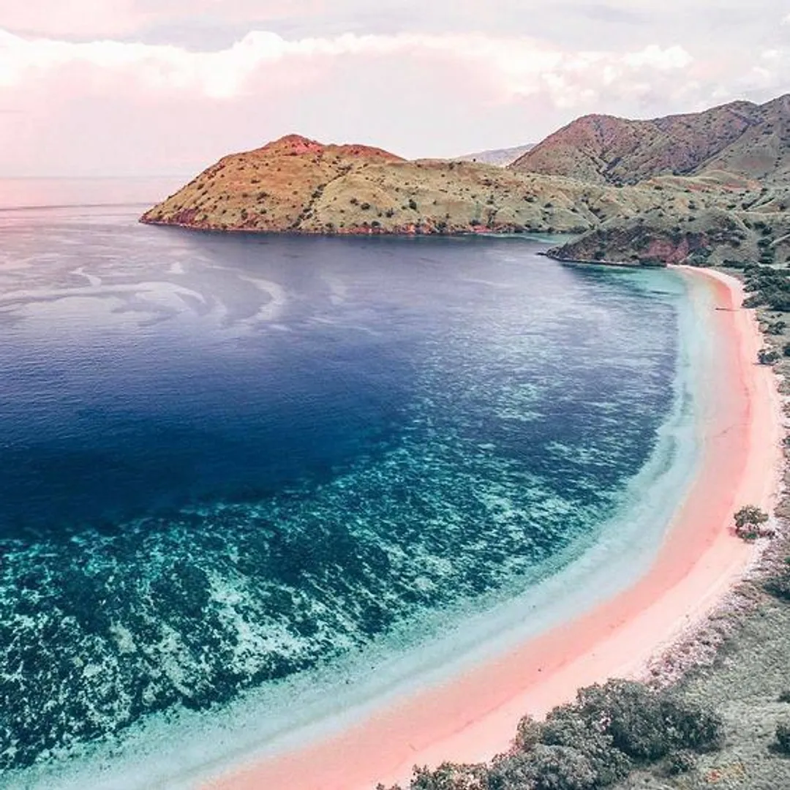
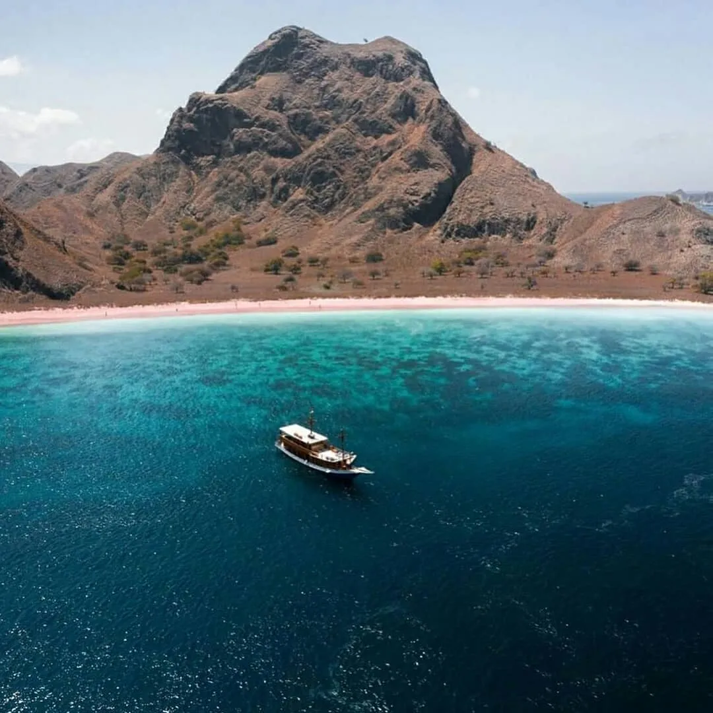
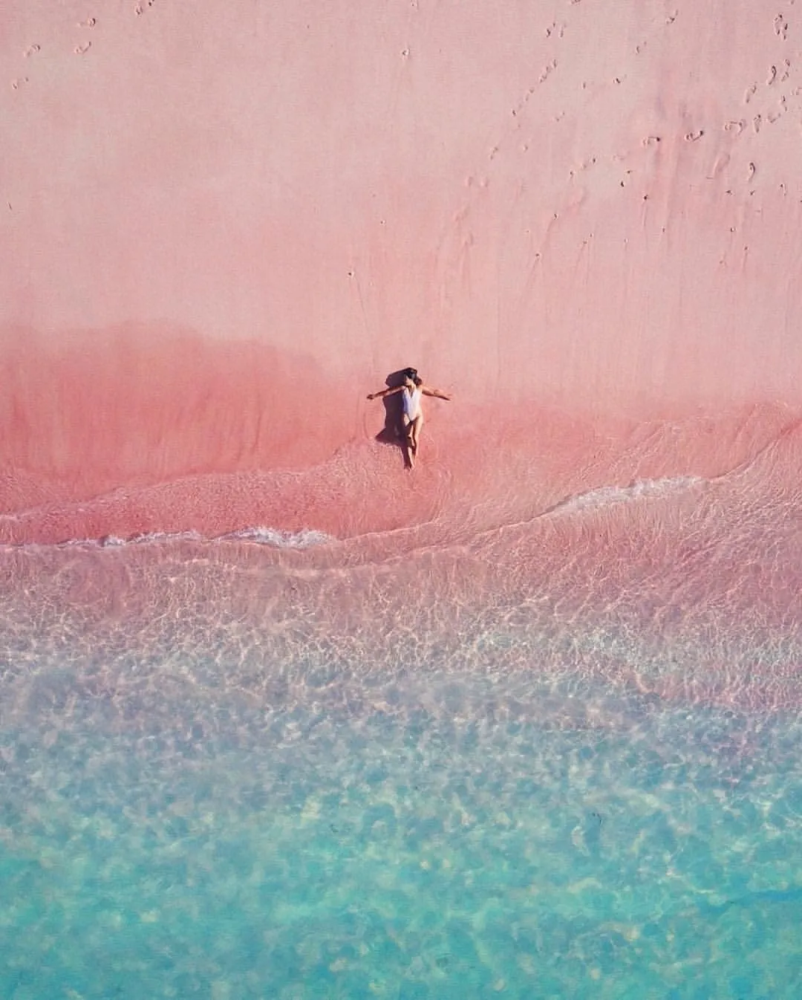
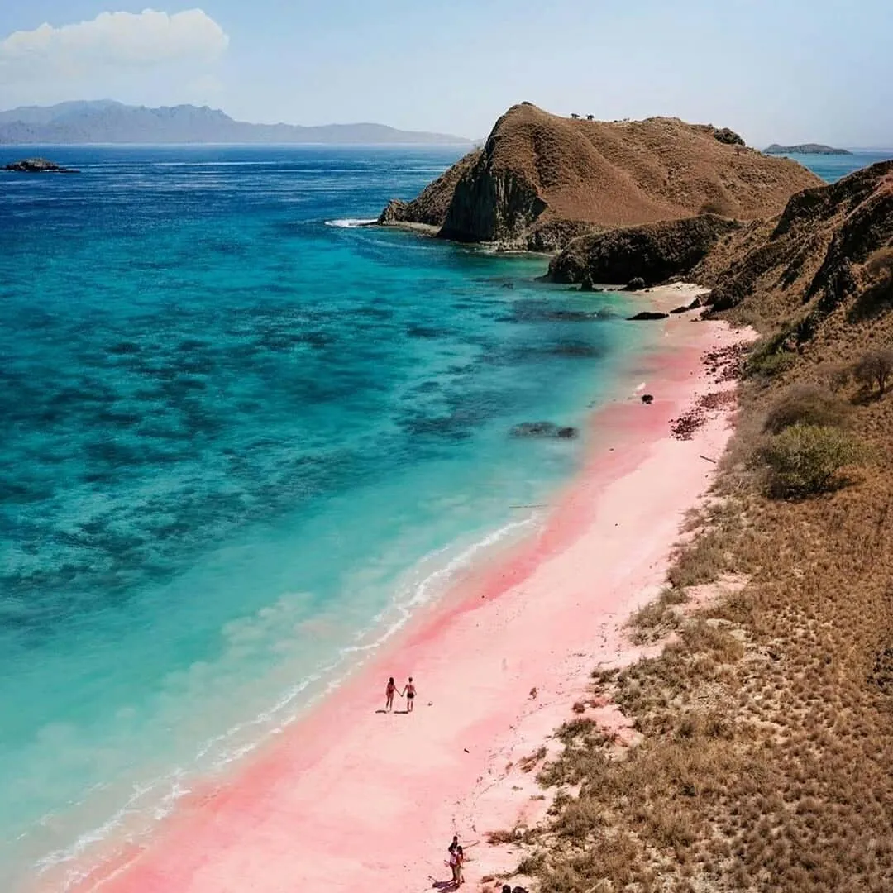
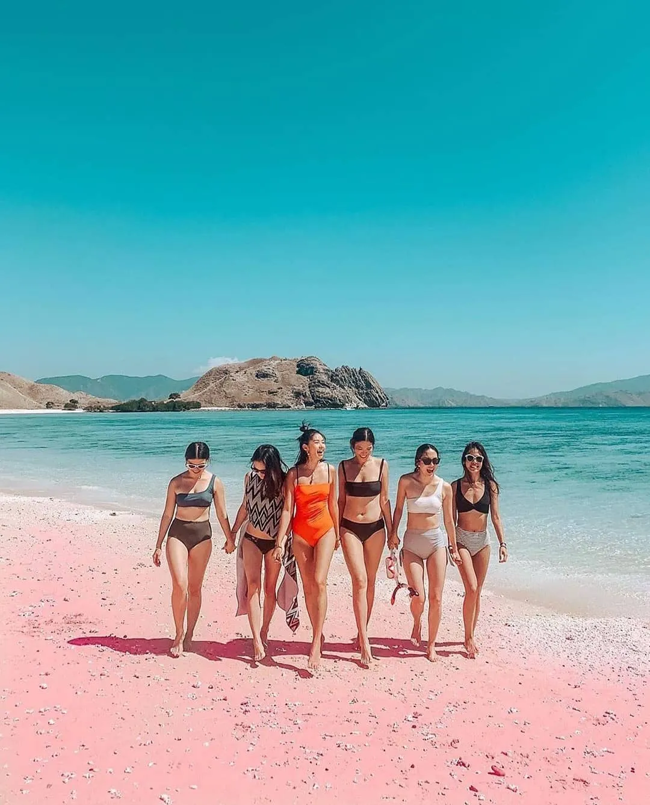
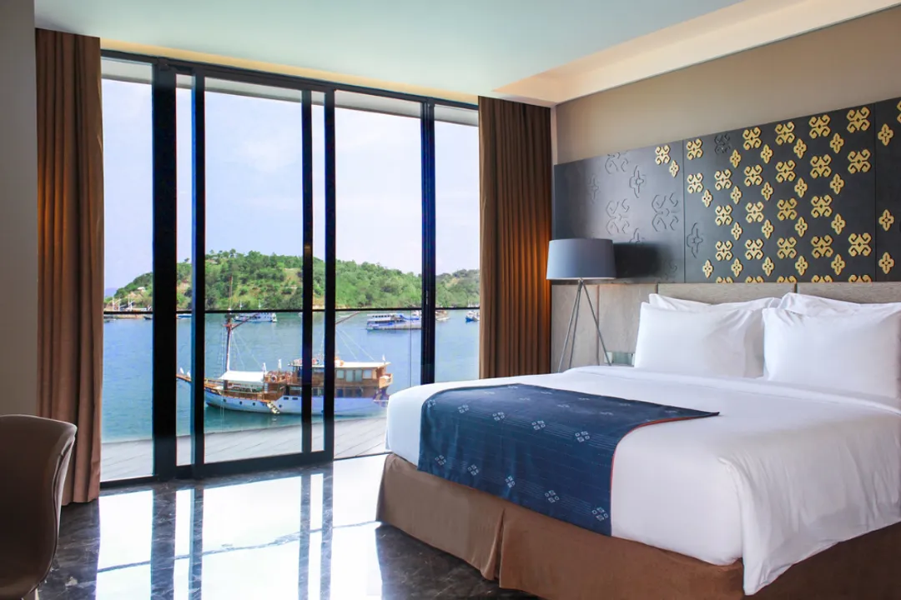

Pink Beach
Pink Beach atau pantai pink yang berada di Labuan Bajo, Nusa Tenggara Timur, merupakan salah satu surga wisata di Indonesia. Dengan pasir yang berwarna pink dan birunya air laut, banyak wisatawan yang datang dari domestik maupun mancanegara. Warna pink pada pasirnya sendiri berasal dari butir-butir asli warna putih pasir, bercampur dengan terumbu karang berwarna merah yang sudah mati, yang bernama homotrema rubrum. Wah, menarik sekali, ya. Untuk dapat datang ke tempat ini, inilah beberapa detail lokasi, rute, aktivitas dan biaya yang dibutuhkan untuk wisata ke Pink Beach, Labuan Bajo.
1. Lokasi Pink Beach
Pink Beach merupakan salah satu pulau yang berada di Pulau Komodo, Flores Barat, Nusa Tenggara Timur. Untuk datang kemari, kamu harus menempuh perjalanan darat dan laut karena letaknya yang ada di Pulau Komodo. Pantai ini berjarak 82 kilometer dari Kota Mataram. Nggak usah khawatir Bela, pemandangan yang akan kamu dapati akan sebanding dengan perjalanan yang kamu tempuh. Di sinilah saatnya kamu mulai browsing dan memilih kapal yang memiliki kredibilitas baik, untuk berlayar di sekitar Labuan Bajo. Mulai dari pulau Rinca, pulau Komodo, hingga Pink Beach. Kamu juga bisa menyesuaikan budget kamu, apakah ingin kunjungan pulang pergi, atau menginap di kapal, sesuai jumlah hari yang kamu inginkan.
2. Rute menuju Pink Beach
Nah, untuk sampai ke Pink Beach, Labuan Bajo, kamu harus menaiki pesawat menuju Bandar Udara Internasional Komodo. Kamu bisa menginap semalam dahulu di Labuan Bajo, untuk berangkat dengan kapal keesokan paginya, atau pilih rute pesawat subuh, untuk langsung berlayar ketika tiba di Labuan Bajo. Dari Labuan Bajo, kamu akan berlayar dari Dermaga Loh Liang, Pulau Komodo. Dari Dermaga Loh Liang, biasanya paket wisata kamu sudah termasuk kunjungan ke beberapa lokasi, termasuk Pink Beach. Menuju ke Pink Beach bisa ditempuh 30 menit menggunakan kapal atau 4 jam trekking melalui tebing karang dan hutan bakau. Mungkin akan lebih lama, akan tetapi panorama yang bisa kamu nikmati lebih indah.
3. Harga tiket masuk Pink Beach
Untuk harga menuju ke Pink Beach sangat beragam, kamu bisa naik private boat seharga Rp800 ribu - Rp900 ribu satu kapal pulang-pergi, ataupun public boat seharga Rp30 ribu – Rp40 ribu per orang untuk sekali jalan. Sedangkan untuk tiket masuknya, hanya Rp10 ribu untuk wisatawan lokal dan Rp50 ribu untuk wisatawan mancanegara.
4. Aktivitas yang bisa dilakukan di Pink Beach
Selain bermain-main di Pink Beach, Labuan Bajo, aktivitas favorit lainnya adalah melakukan snorkeling dan diving. Berbagai jenis terumbu karang dan ragam ikan yang indah, bisa kamu nikmati di taman bawah lautnya. Untuk aktivitas yang lebih santai, kamu bisa bermain pasir ataupun berenang di pinggiran pink beach. Sebab, air lautnya cukup jernig dan tentunya bersih. Namun, kalau kamu ingin mengelilingi pulau-pulau kecil, terdapat nelayan yang menawarkan mengelilinginya. Jangan lupa abadikan foto sebanyak-banyaknya, ya,
5. Daya tarik Pink Beach
Nggak ada pemukiman warga di pulau ini. Oleh karena itu, kamu bisa mengunjunginya dari pagi hingga sore saja, menyesuaikan dengan ketentuan yang berlaku dan kondisi alam. Pantai ini juga merupakan habitat asli dari komodo dragon sehingga kamu perlu menyewa jasa tour guide supaya lebih aman. Kalau beruntung, kamu bisa melihat spesies tersebut dari kejauhan. Saat sampai di tempat ini, kamu akan terpesona dengan warna pasirnya yang begitu indah. Kebanyakan pengunjung memilih untuk berswafoto dan merekam pemandangan indah di sana. Tak hanya itu saja, wisatawan juga bisa naik ke atas Bukit Sabana yang tidak dimiliki oleh pantai lainnya.
6. Tips saat mengunjungi Pink Beach
Jika kamu akan berkunjung ke Pink Beach, ada beberapa tips yang bisa kamu ikuti supaya liburan menjadi nyaman dan aman berikut ini. Pastikan kamu dalam keadaan prima mengingat perjalanan yang jauh. Jika kamu tidak memiliki alat snorkeling, pihak kapal sudah menyiapkan alat-alatnya. Namun, memang lebih aman dan higienis punya sendiri, kan, Bela? Datang sebelum siang hari atau setelah makan siang, saat matahari tidak terlalu terik. Sediakan perbekalan makanan dan minuman. Jangan lupa, bawa sampahnya kembali, ya. Jangan ditinggal!
7. Rekomendasi penginapan di sekitar Pink Beach
Selain tiket dan transportasi menuju Pink Beach di atas, kamu perlu mempersiapkan penginapan juga. Apalagi, jika kamu datang dari luar kota dan akan menghabiskan beberapa waktu di sini. Berikut ini adalah beberapa rekomendasi penginapan yang bisa kamu tuju.
- 1.Meruorah Komodo Labuan Bajo Alamat: Kawasan Marina, Jalan Soekarno Hatta, Labuan Bajo, Kecamatan Komodo, Kabupaten Manggarai Barat, Nusa Tenggara Timur.
- 2.Bintang Flores Hotel Alamat: Jalan Pantai Pede, Labuan Bajo, Kecamatan Komodo, Kabupaten Manggarai Barat, Nusa Tenggara Timur.
- 3.AYANA Komodo Waecicu Beach Alamat: Pantai Waecicu, Labuan Bajo, Kecamatan Komodo, Kabupaten Manggarai Barat, Nusa Tenggara Timur.
- 4.Komodo Lodge Alamat: Jalan Mutiara, Kampung Ujung, Jalan Mutiara, Labuan Bajo, Kecamatan Komodo, Kabupaten Manggarai Barat, Nusa Tenggara Timur.
- 5.Eco Tree O'tel Alamat: Jalan Soekarno Hatta No.15, Labuan Bajo, Kecamatan Komodo, Kabupaten Manggarai Barat, Nusa Tenggara Timur.
Itulah beberapa detail lokasi, rute, aktivitas dan biaya yang dibutuhkan untuk wisata ke Pink Beach, Labuan Bajo beserta tips ketika mengunjunginya. Semoga bermanfaat, ya!